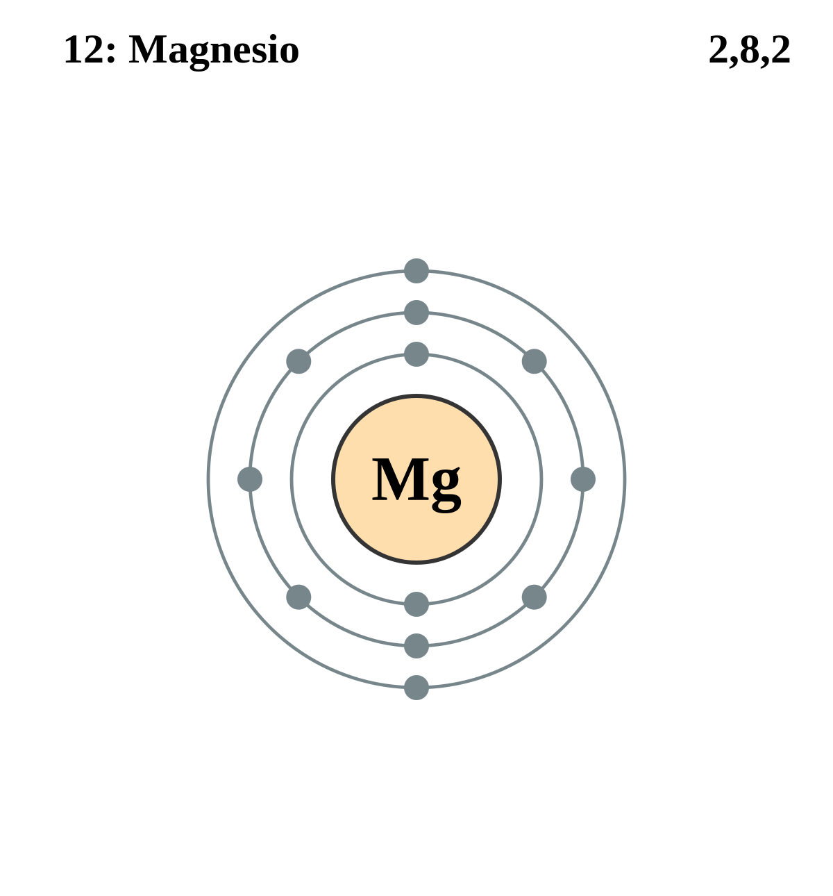

|
|
||
|
MAGNESIO Es el octavo elemento más abundante en la corteza terrestre y se encuentra principalmente en la magnesita, la dolomita y otros minerales. El magnesio es un metal ligero, de color blanco plateado y bastante duro. Se deslustra ligeramente en contacto con el aire, arde fácilmente si se calienta y produce una llama blanca deslumbrante. Se utiliza para flashes fotográficos, luces de bengala, pirotecnia y bombas incendiarias. Es más ligero que el aluminio y sus aleaciones son esenciales para la construcción de aviones y misiles. |
 |
DATOS Número Atómico: 12 Peso Atómico: 24.31 Electronegatividad: 1.31 Configuración Electrónica: [Ne]3s2 Estados de Oxidación: +2 No. de Electrones de Valencia: 2 |